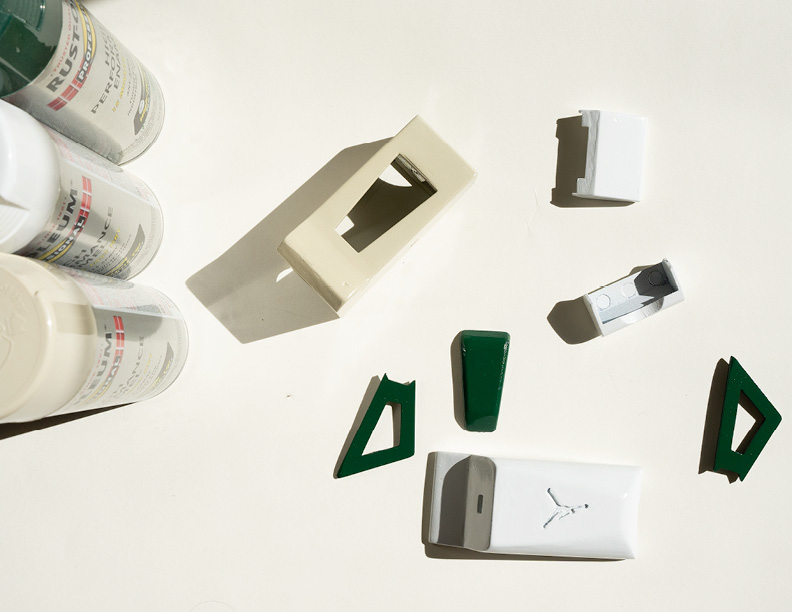
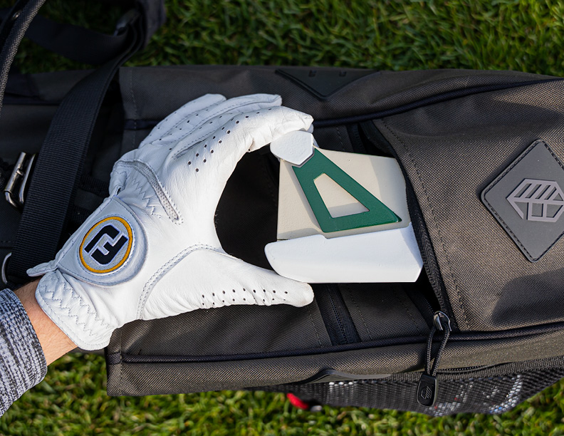
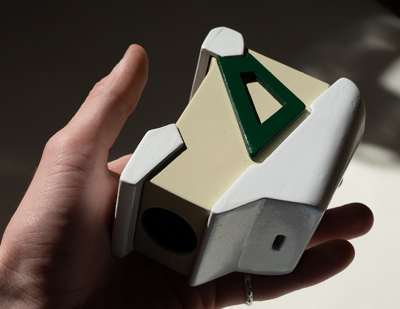
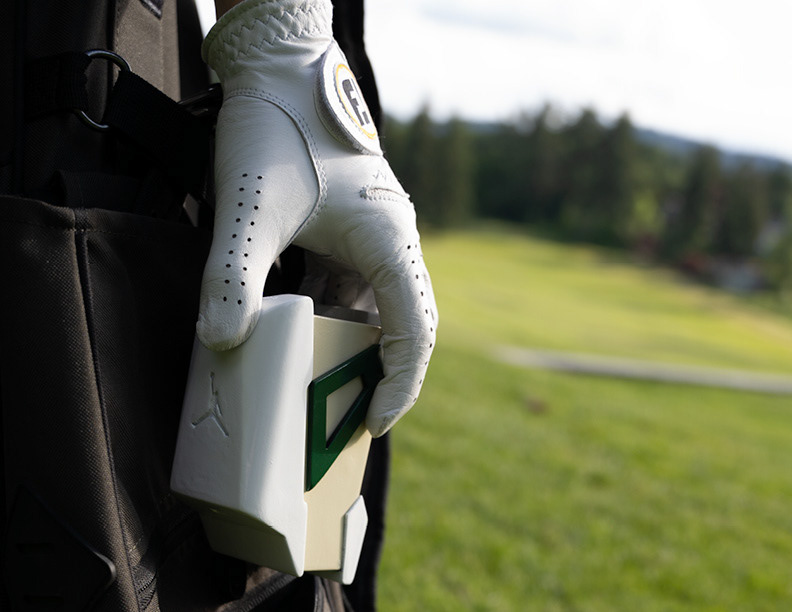

Jordan IV Range Finder
The Jordan IV Rangefinder was an exploration of what could be. Using the existing infrastructure of Jordan
brand
and its
presence in the golf community this concept was a very fulfilling make. The end product was a functioning
rangefinder
with magnets on the top to secure it to the frame of the golf cart while in play.



